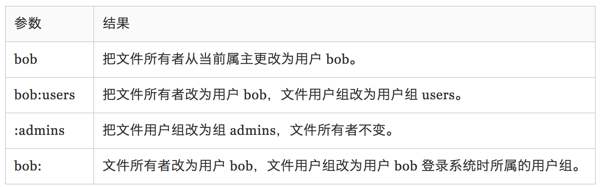

第九章-权限管理🏫
Unix 传统中的操作系统不同于那些 MS-DOS 传统中的系统，区别在于它们不仅是多任务系统，而且也是 多用户系统。这到底意味着什么？它意味着多个用户可以在同一时间使用同一台计算机。
为了使多用户特性付诸实践，那么必须发明一种方法来阻止用户彼此之间受到影响。毕竟，一个 用户的行为不能导致计算机崩溃，也不能乱动属于另一个用户的文件。
主要的命令有：1
2
3
4
5
6
7
8id – 显示用户身份号（每个用户都会有个 id）
chmod – 更改文件模式
umask – 设置默认的文件权限 (这个我基本不会用到，暂时忽略)
su – 以另一个用户的身份来运行 shell
sudo – 以另一个用户的身份来执行命令
chown – 更改文件所有者
chgrp – 更改文件组所有权
passwd – 更改用户密码
chmod-更改文件模式
1 | -rw-r--r-- 1 sevencai TENCENT\Domain Users 523 8 15 15:36 README.md |
列表的前十个字符是文件的属性。这十个字符的第一个字符表明文件类型。
具体可能有的值有：
剩下的九个字符叫做文件模式，代表着文件所有者、文件组所有者和其他人的读、写和执行权限。
如-rwxr-xr-x标识的含义是：一个普通文件，对文件所有者来说可读、可写、可执行。也可以被其他的所有人读取和执行。
我们使用八进制数字来设置所期望的权限模式。因为每个八进制数字代表了 3个二进制数字，这种对应关系，正好映射到用来存储文件模式所使用的方案上。
对应的值为：

通过使用3个八进制数字，我们能够设置文件所有者、用户组和其他人的权限：
1 | chmod 600 foo.txt |
通过传递参数 “600”，我们能够设置文件所有者的权限为读写权限，而删除用户组和其他人的所有 权限。虽然八进制到二进制的映射看起来不方便，但通常只会用到一些常见的映射关系： 7 (rwx)，6 (rw-)，5 (r-x)，4 (r–)，和 0 (—)。
chmod 命令还支持一种符号表示法，来指定文件模式。符号表示法分为三部分：更改会影响谁， 要执行哪个操作，要设置哪种权限。通过字符 “u”、“g”、“o”和 “a” 的组合来指定 要影响的对象，如下所示：
如果没有指定字符，则假定使用”all”。执行的操作可能是一个“＋”字符，表示加上一个权限， 一个“－”，表示删掉一个权限，或者是一个“＝”，表示只有指定的权限可用，其它所有的权限被删除。
有下面这些例子（我感觉这种我应该不会经常用，先前一直用上面的二进制模式比较多）：
su 及 sudo
su － 以其他用户身份和组 ID 运行一个 shell
语法类似： su [-[l]] [user]
如果包含”-l”选项，那么会为指定用户启动一个需要登录的 shell。这意味着会加载此用户的 shell 环境， 并且工作目录会更改到这个用户的家目录。这通常是我们所需要的。如果不指定用户，那么就假定是 超级用户。注意（不可思议地），选项”-l”可以缩写为”-“，这是经常用到的形式。
因此为了启动超级用户我们可能会这样执行su -。
如果以su -c 'command'这样的方式启动一个 shell, 是可以执行单个的command命令，而不是重新启动了一个可以交互的shell。注意 command 要用 引号引起来。如su -c 'ls -l /root/*'。
sudo 命令在很多方面都相似于 su 命令，但是 sudo 还有一些非常重要的功能。管理员能够配置 sudo 命令，从而允许一个普通用户以不同的身份（通常是超级用户），通过一种非常可控的方式 来执行命令。尤其是，只有一个用户可以执行一个或多个特殊命令时，（更体现了 sudo 命令的方便性）。
执行 sudo -l可以看当前被赋予了哪些权限如：1
2
3
4
5
6➜ midas-welfare git:(master) sudo -l
Password:
Matching Defaults entries for sevencai on SEVENCAI-MB2:
env_reset ......
User sevencai may run the following commands on SEVENCAI-MB2:
(ALL) ALL
所以这里总结下 su 和 sudo 的区别和联系：
sudo命令需要输入当前用户的密码，su命令需要输入 root 用户的密码。sudo命令只允许使用提升的权限运行单个命令，而su命令会启动一个新的 shell，同时允许使用 root 权限运行尽可能多的命令，直到明确退出登录
所以根据第一条，我们可以知道就安全性而言，sudo 比 su 更好。su意味着要与其他用户共享 root 密码，这是一件比较危险的事情。并且对于 su 而言如果要撤销特定用户的超级（root）权限，唯一的办法就是更改 root 密码，然后再告知其他用户。很麻烦。但是 sudo 就不一样了,如果想要阻止某个用户访问 root 权限，只需要调整 sudoers 这个文件中的配置即可。
The key difference between sudo and su is sudo runs a command as root, whereas su makes you root.
chown － 更改文件所有者和用户组
chown 命令被用来更改文件或目录的所有者和用户组。使用这个命令需要超级用户权限。
1 | chown [owner][:[group]] file... |

下面这个例子比较实用，有两个用户，janet拥有超级用户访问权限，而 tony 没有。用户 janet 想要从 她的家目录复制一个文件到用户 tony 的家目录。因为用户 janet 想要 tony 能够编辑这个文件， janet 把这个文件的所有者更改为 tony:
1 | [janet@linuxbox ~]$ sudo cp myfile.txt ~tony |
更改用户密码
1 | passwd [user] |
passwd 命令将会试着强迫你使用“强”密码。这意味着它会拒绝接受太短的密码、与先前相似的密码、 字典中的单词作为密码或者是太容易猜到的密码。
第十章：进程🚓
内核维护每个进程的信息，以此来保持事情有序。例如，系统分配给每个进程一个数字，这个数字叫做 进程(process) ID 或 PID。PID 号按升序分配，init 进程的 PID 总是1。内核也对分配给每个进程的内存和就绪状态进行跟踪以便继续执行这个进程。 像文件一样，进程也有所有者和用户 ID，有效用户 ID，等等。
1 | - ps – 报告当前进程快照 |
查看进程
查看进程，最常使用地命令（有几个命令）是 ps(process)。1
2
3
4
5
6
7ps
PID TTY TIME CMD
54944 ttys000 0:00.14 /Applications/iTerm.app/Contents/MacOS/iTerm2 --server login -fp sevencai
55003 ttys000 0:00.61 -zsh
10488 ttys001 0:00.27 /Applications/iTerm.app/Contents/MacOS/iTerm2 --server login -fp sevencai
10492 ttys001 0:02.66 -zsh
默认情况下，ps 不会显示很多进程信息，只是列出与当前终端会话相关的进程。为了得到更多信息， 我们需要加上一些选项。TTY 是 “Teletype”(直译电传打字机) 的简写，是指进程的控制终端。TIME 字段表示 进程所消耗的 CPU 时间数。
1 | // 加上 “x” 选项（注意没有开头的 “-“ 字符），告诉 ps 命令，展示所有进程，不管它们由什么 终端（如果有的话）控制。在 TTY 一栏中出现的 “?” ，表示没有控制终端。使用这个 “x” 选项，可以 看到我们所拥有的每个进程的信息。 |
用 top 命令动态查看进程
虽然 ps 命令能够展示许多计算机运行状态的信息，但是它只是提供 ps 命令执行时刻的机器状态快照。 为了看到更多动态的信息，我们使用 top 命令。
top 程序接受一系列从键盘输入的命令。两个最有趣的命令是 h 和 q。h，显示程序的帮助屏幕，q， 退出 top 程序。
通过 kill 命令给进程发送信号
1 | kill [-signal] PID... |
具体的 -signal 的可选值，如下所示：
总结🌹
加上这篇文章，The Linux Command Line 的第一章就结束了。我零零散散的花的时间去整理的，中间也去除了一些我基本上不怎么用到的，着重加强了下我经常用到的一些命令。
比如 kill ，我以前经常用到 kill -9, 但是其实一直不知道这个 -9 是什么东西。现在进行稍微系统一点的学习，打命令不再依靠熟悉和曾经用过，而是有理解的。📚❄️
包括还有 sudo 及 su, 以前一直有用过，但是模拟两可，并不知道两者的区别。现在都大致的有了解。以后看运维同学敲命令，我看它敲 su or sudo 就知道它是大概的区别是什么了。想要做什么事情。🐶